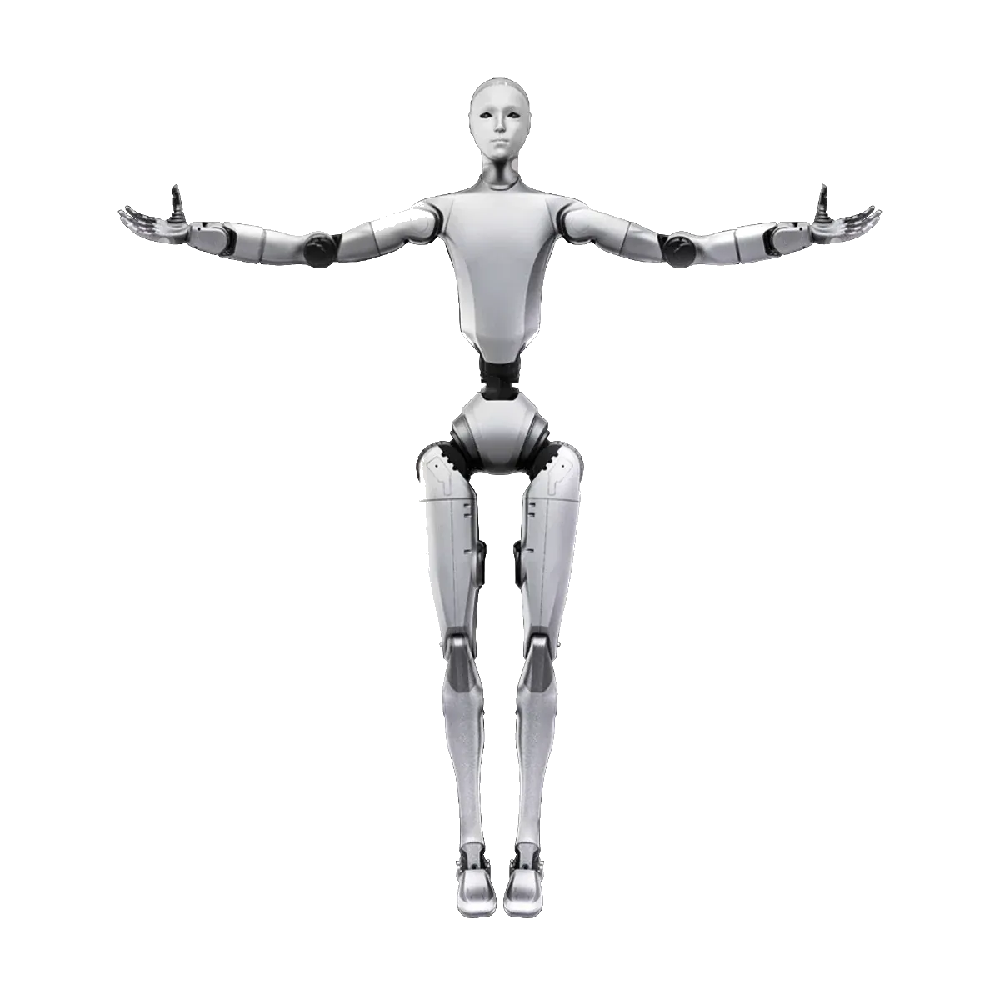

Unitree H2-X
Unitree H2-XChe cos'è l'Unitree H2-X
Unitree ha presentato l'H2-X a ottobre 2026 con il video «Kung Fu Legend: Guardian», dedicato a vigilanza e soccorso. Sulla pagina ufficiale lo descrive come umanoide a grandezza naturale di nuova generazione, per sicurezza, manifattura, servizi commerciali e servizi domestici.
Non è una versione dell'H2: è un robot diverso, più compatto, con un'autonomia quasi tripla e due batterie che si cambiano senza spegnerlo. Nel video il robot ferma un aggressore, sfonda la portiera di un'auto e solleva un veicolo per liberare una persona. Unitree non ha precisato quali di queste azioni siano autonome.
Specifiche dell'Unitree H2-X
I valori vengono dalla pagina ufficiale Unitree H2-X, così come pubblicati.
| Voce | Valore |
|---|---|
| Dimensioni in piedi | 1725 × 455 × 245 mm |
| Peso | 65+ kg con batteria |
| Gradi di libertà | 31 (6 per gamba, 7 per braccio, 3 in vita, 2 nella testa) |
| Coppia massima | 300 N·m gamba, 150 N·m braccio |
| Carico per braccio | circa 7 kg nominali, circa 15 kg di picco |
| Batterie | due, sostituibili a caldo: 20 Ah (1,152 kWh), ricarica magnetica |
| Autonomia | circa 8 ore da fermo e circa 4 ore in camminata continua |
| Telecamere | binoculare di profondità nella testa, grandangolare nel petto |
| Interazione | display LED a matrice nella testa, array di microfoni, altoparlanti stereo |
| Calcolo | PC1 CPU 8 core; EDU: PC2 Intel Core i7 o Jetson Orin NX, PC3 opzionale Jetson Thor T5000 o AGX Orin |
| Garanzia | 8 mesi (H2-X), 12 mesi (H2-X EDU) |
Differenze tra H2-X e H2
Hanno lo stesso numero di gradi di libertà, ma corpo, batteria e impiego sono diversi. I dati dell'H2 vengono dalla scheda ufficiale H2.
| Voce | H2-X | H2 |
|---|---|---|
| Altezza | circa 170 cm | circa 182 cm |
| Peso | 65+ kg | circa 70 kg |
| Coppia massima | 300 N·m gamba, 150 N·m braccio | 360 N·m gamba, 120 N·m braccio |
| Batteria | 2 × 20 Ah sostituibili a caldo, ricarica magnetica | 15 Ah (0,972 kWh) |
| Autonomia | circa 8 ore da fermo, circa 4 in camminata continua | circa 3 ore |
| Testa | display LED a matrice | senza display |
| Impiego indicato | sicurezza e soccorso, servizi | ricerca e sviluppo |
| Prezzo di partenza |
 Unitree H2 Basic (H2 Air)
Unitree H2 Basic (H2 Air)Se servono turni lunghi senza fermare il robot, l'H2-X è la scelta. Se serve la piattaforma di ricerca più diffusa, con l'H2 Plus e i busti H2-A e H2-D, resta la famiglia H2.
Prezzo e configurazioni dell'Unitree H2-X
Nella scheda H2-X ci sono quindici configurazioni: H2-X Air, H2-X EDU con l'SDK e tredici composizioni di mani. Prezzi IVA esclusa, con il prezzo di listino barrato.
| Configurazione | Cosa comprende | Prezzo |
|---|---|---|
| H2-X Air | robot completo, telecomando, due batterie e caricabatterie; senza SDK | |
| H2-X EDU | Air + SDK e PC2 di sviluppo; mani a parte | |
| H2-X EDU Dex1-1 | H2-X EDU con due pinze Dex1-1 Plus | |
| H2-X EDU Revo 2 Basic | H2-X EDU con due mani BrainCo Revo 2 Basic | |
| H2-X EDU Dex3-1 | H2-X EDU con due mani Dex3-1 a tre dita | |
| H2-X EDU Revo 2 Touch | H2-X EDU con due mani BrainCo Revo 2 Touch (tattili) | |
| H2-X EDU Dex3-1 Tactile | H2-X EDU con due mani Dex3-1 tattili | |
| H2-X EDU Inspire DFQ | H2-X EDU con due mani Inspire DFQ | |
| H2-X EDU Inspire E2 | H2-X EDU con due mani Inspire E2 con telecamera RGB | |
| H2-X EDU Dex5-1 | H2-X EDU con due mani Dex5-1 a cinque dita | |
| H2-X EDU Dex5-1P | H2-X EDU con due mani Dex5-1P a cinque dita | |
| H2-X EDU Wuji Hand 2 | H2-X EDU con due mani Wuji Hand 2 con telecamera RGB | |
| H2-X EDU Revo 3 U21 | H2-X EDU con due mani BrainCo Revo 3 U21 con telecamera RGB | |
| H2-X EDU Revo 3 U21T | H2-X EDU con due mani BrainCo Revo 3 U21T tattili | |
| H2-X EDU Revo 3 U21V | H2-X EDU con due mani BrainCo Revo 3 U21V visuo-tattili |
Le mani sono quelle dell'ecosistema H2: la compatibilità con l'H2-X e la composizione finale si confermano con Unitree in fase d'ordine. L'H2-X è in preordine e la data di consegna si conferma nel preventivo scritto.

Per chi ha senso l'H2-X
Per chi deve tenere un umanoide in servizio per molte ore: vigilanza, accoglienza, presidio di spazi, prove in scenari di emergenza. L'Air si usa con telecomando e app; per sviluppare software proprio serve l'EDU con l'SDK.
Unitree raccomanda almeno 2–3 metri di distanza di sicurezza dal robot. Per vigilanza o soccorso serve una valutazione dei rischi del sito prima dell'installazione. Per un primo progetto in azienda il punto di partenza è la guida al PoC con un robot umanoide; il confronto con gli altri modelli è nel confronto umanoidi 2026.
Domande frequenti
Quanto costa l'Unitree H2-X?
Da 36.713 € IVA esclusa per l'H2-X Air. L'H2-X EDU con l'SDK costa 54.057 €; con le mani si va da 55.378 € a 156.772 €. Il prezzo finale si conferma nel preventivo scritto.
H2-X e H2 sono lo stesso robot?
No. L'H2-X è un robot diverso: circa 170 cm e 65+ kg contro 182 cm e circa 70 kg dell'H2, due batterie da 20 Ah sostituibili a caldo e circa 8 ore di autonomia da fermo (circa 4 in camminata continua) contro circa 3 ore, più coppia alle braccia e display LED nella testa.
Quanto dura la batteria dell'H2-X?
Unitree dichiara circa 8 ore da fermo e circa 4 ore in camminata continua, con due batterie da 20 Ah sostituibili a caldo e ricarica magnetica.
Quale configurazione dell'H2-X scegliere?
Air per dimostrazioni e uso da telecomando; EDU per sviluppare software con l'SDK. Le mani si scelgono in base al compito, dalle pinze Dex1-1 alle BrainCo Revo 3 U21V visuo-tattili.
Quando arriva l'H2-X?
È in preordine. La data di consegna si conferma nel preventivo dopo la verifica con Unitree.
Fonti
- Unitree, pagina ufficiale Unitree H2-X (specifiche)
- Unitree, video ufficiale H2-X «Kung Fu Legend: Guardian»
- Unitree, scheda ufficiale Unitree H2 (dati per il confronto)
- Abra Robotics, scheda H2-X e listino pubblico (prezzi IVA esclusa)